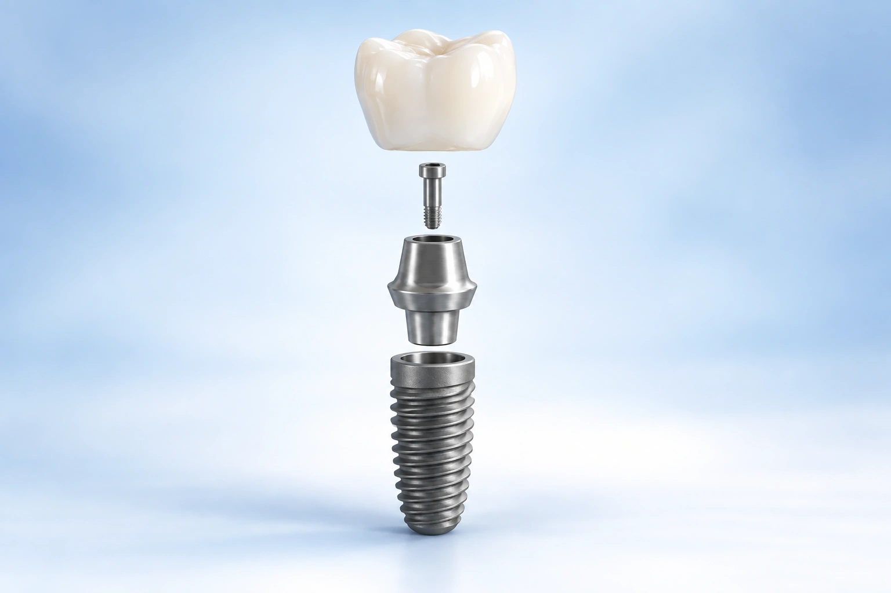
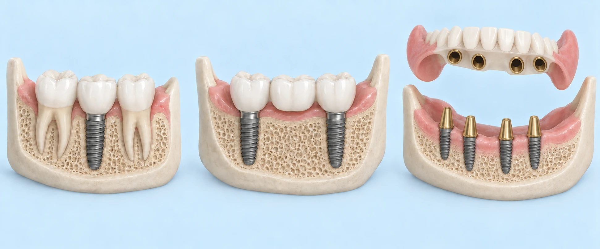
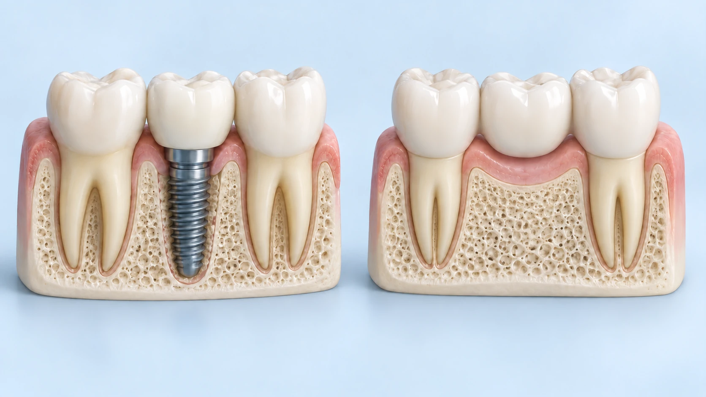
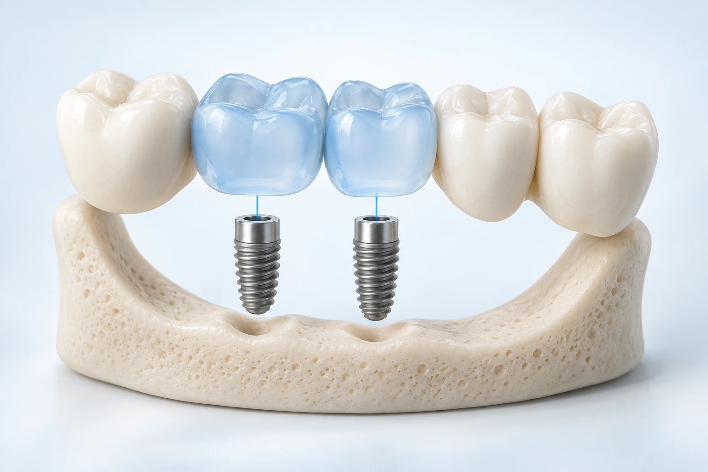
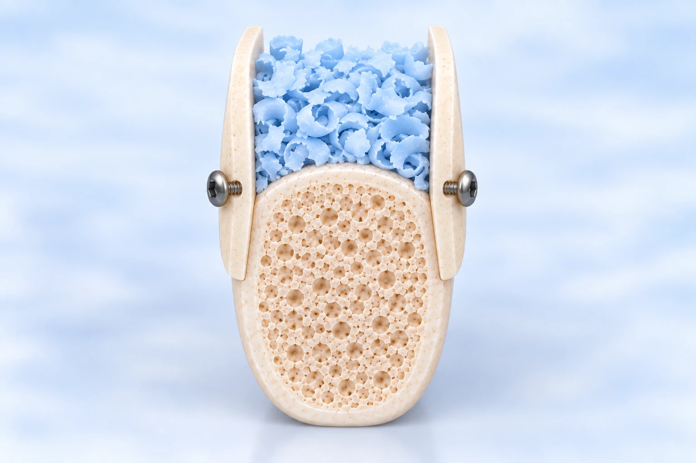
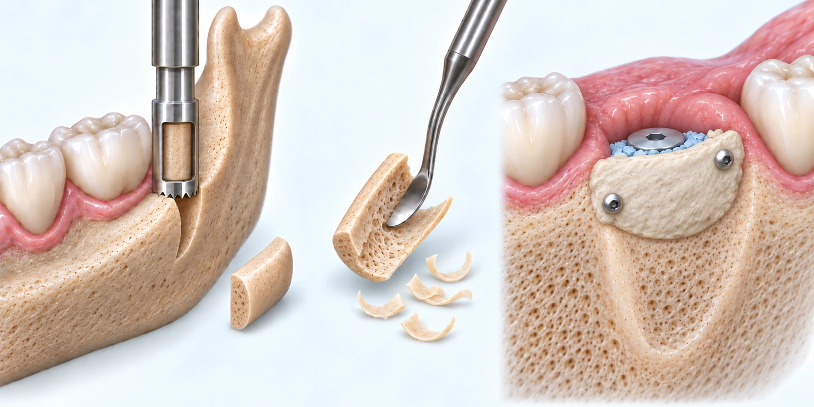
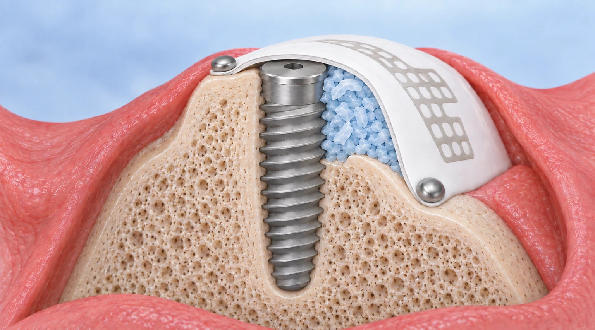
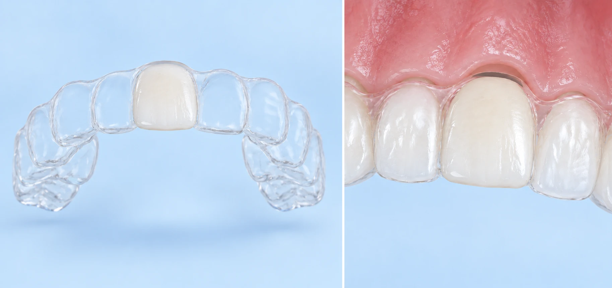
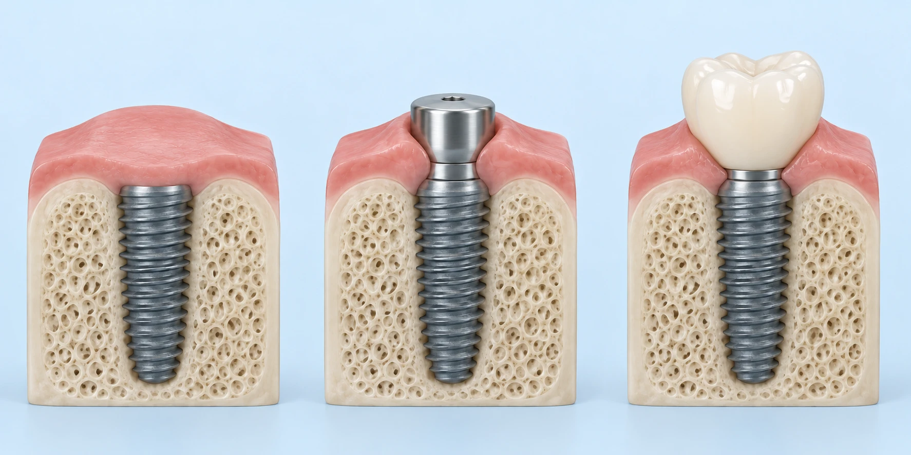
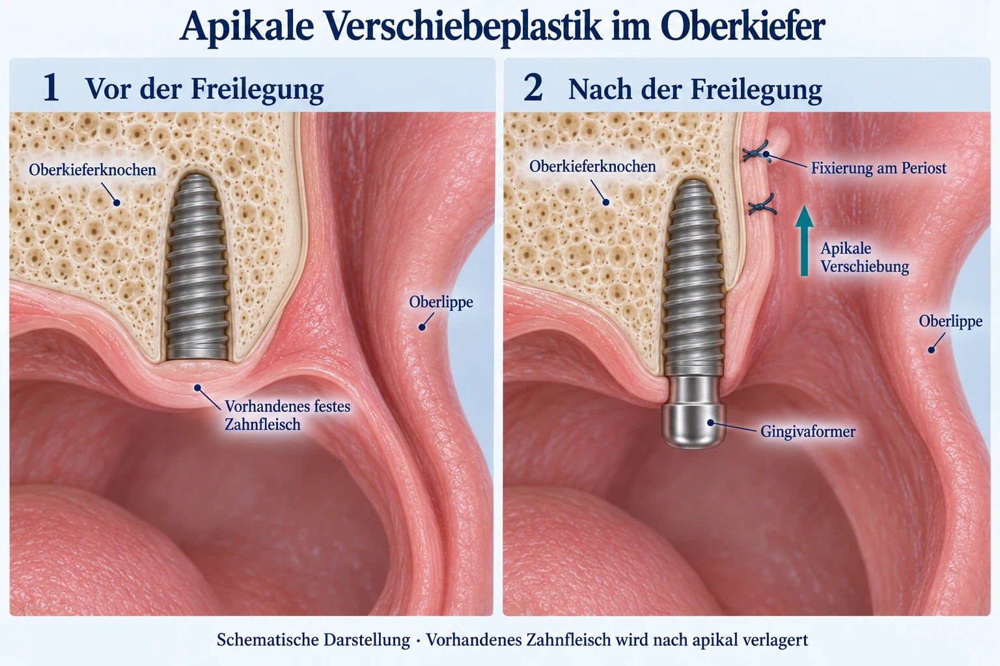

An implant replaces a missing tooth root. This combined guide takes you from your first questions through consultation and planning to treatment and long-term care. It supplements your personal consultation; examination and shared decision-making determine which steps are appropriate for you.
The implant body is anchored in the jawbone. A connecting part later supports the visible crown, bridge or denture. An implant alone is therefore not a complete tooth. We provide surgical planning and treatment in coordination with your general dental practice, which plans and provides the definitive prosthetic restoration.
Titanium is our established standard. Ceramic implants may be an alternative in selected cases; their properties, limitations and costs need individual discussion. Implant dimensions and number depend on the bone and planned restoration. Tell the radiology team about your implants before an MRI examination.

Enlarge image ↗A bridge, removable denture or, in selected situations, leaving a gap may be alternatives. A bridge can be particularly appropriate when neighbouring teeth already need crowns. Treatment burden, cleaning, adjacent teeth, cost and your preferences all matter. A tooth worth preserving is not removed simply because an implant is available.

Enlarge image ↗As an example, imagine a diameter of about 4 mm and a length of 8–10 mm. These are not fixed dimensions: shorter, longer, narrower and wider implants are available. Bone, tooth position and loading guide the choice. A two-piece implant has an external bone thread and an internal connection for the abutment, secured by a prosthetic screw.
Titanium is our established standard, with extensive long-term experience and many surgical and prosthetic options. Bone bonds to its surface, a process called osseointegration. In our usual approach the implant initially heals beneath the gum.
Zirconia ceramic may be an alternative in suitable circumstances, including a preference for a metal-free restoration. We discuss the specific one- or two-piece system, strength, fracture risks, restorative options, compatibility with grafting and costs. Limitations depend on the system and cannot all be applied to every ceramic implant. Costs in our practice may be higher than for titanium. Titanium has a broader long-term evidence base; selected ceramic systems also have good clinical results. [2]
Rejection as after an organ transplant is not the usual explanation for implant loss. Possible causes include failure to integrate, infection, insufficient bone, overload or poor cleanability. Suspected material intolerance requires individual assessment; loss alone does not prove an allergy.
Titanium is not ferromagnetic. MRI is possible with many dental implants, but the instructions for the actual implant and other components matter. Inform the radiology team and bring your implant record if possible. Metal can affect image quality nearby; the radiology team clears the examination.
A natural tooth worth preserving takes priority. We compare options for a gap using your findings and preferences; no solution is best for everyone.

Enlarge image ↗| Criterion | Implant | Conventional bridge | Partial denture |
|---|---|---|---|
| Neighbouring teeth | Usually do not need preparation. | Supporting teeth usually need preparation; useful when they already need crowns. | Retention and support often involve other teeth. |
| Retention and cleaning | A fixed single restoration is possible; clean interdental spaces. | Fixed; clean beneath the pontic with suitable aids. | Removable; clean the denture and remaining teeth. |
| Bone and comfort | Transfers forces into bone; does not completely prevent bone changes. | Does not replace the root; comfort depends on design and supporting teeth. | Does not replace the root; retention and comfort depend on the design. |
| Treatment and time | Surgery and months of healing; possibly grafting. | Often several weeks, for example 4–8, if conditions permit. | Often several weeks, for example 4–8; preliminary treatment can extend this. |
All restorations may need maintenance, repairs or replacement. Leaving a gap can allow teeth to move, opposing teeth to overerupt and loading to change; the extent and need for treatment are assessed individually. Not every gap must be replaced with an implant.
Your first appointment is for examination, discussion and planning, not implant surgery. You do not need to know the specialist techniques beforehand. The appointment does not commit you to treatment. We assess your wishes, suitability, alternatives and likely timescale and costs.
What bothers you? Would you prefer fixed or removable teeth? How important are treatment time, anxiety, temporary teeth and cost? Bring your questions. Age alone does not determine suitability: health, completed jaw growth, ability to maintain hygiene and treatment goals are important.
We discuss your wishes, findings, alternatives and risk factors, examine your mouth and review existing radiographs. We then decide whether more imaging is needed. You receive an initial view of treatment, time and costs; the final plan follows adequate diagnosis. A planning appointment may take about 30 minutes, longer for complex questions. No implant is placed at the first consultation; you can decide in your own time.
Tell us about recent heart attacks, strokes, stents and major operations. Allergies to antibiotics, painkillers or anaesthetics, possible pregnancy and all non-prescription medicines and supplements also belong in your medical history.
Age alone is not decisive. General health, medication, resilience, bone and future cleaning ability matter more. Our practice has treated suitable patients over 90. Conversely, a simpler solution may be preferable with reduced resilience. Jaw growth must be complete in young patients.
We plan backwards from the desired restoration. First, the future tooth position is digitally simulated. This determines a suitable implant position and whether additional bone is needed. This approach is called backward planning.
No. Existing or conventional radiographs may be sufficient in straightforward situations. We use CBCT when the additional three-dimensional information materially supports diagnosis or safe planning. Benefits, radiation exposure and additional costs are explained before the scan.
CBCT / 3D imaging explained →
Enlarge image ↗An implant needs sufficient bone for stable placement in the right position for the future restoration. If bone width or height is insufficient, targeted augmentation may help. Small defects can sometimes be augmented at implant placement. A larger height or width deficiency often requires a separate bone augmentation procedure and healing period first. A sinus lift may be appropriate in the back of the upper jaw. A bridge, denture or a different implant plan may sometimes be an alternative to extensive grafting.
The technique is chosen after assessment. You then receive the information relevant to your procedure; you do not need to read about every grafting technique in advance.
When guided surgery is planned, we can transfer the digital plan to individually manufactured, 3D-printed drilling and positioning guides suitable for processing. We have used this approach for several years. An acceptable adjustment of position may sometimes reduce grafting requirements; the future restoration remains decisive.
This overview helps you prepare for the decision. Examination and planning determine the method. Bone is built up where it is needed for the planned restoration.
Bone width and height are sufficient. Placement is followed by healing, uncovering if needed and restoration by your dentist.
The implant can be placed stably and small defects are augmented with bone chips, possibly substitute material and a membrane. Sticky Bone may be considered for small residual defects.
In the back of the upper jaw, the sinus membrane is elevated when needed. Internal access is through the implant site; external access is through a lateral bone window. Residual bone and stability determine whether placement is simultaneous or follows graft healing.
Thin autogenous bone shells are fixed with small screws to create a protected space filled with bone chips. Major vertical grafts are usually carried out before implant placement. Bone is often harvested from the posterior lower jaw.
A curved piece of your own posterior mandibular bone is thinned and fixed over the defect with small screws. The space beneath is filled with bone chips. Harvesting and material selection follow the findings.
A stable membrane protects the graft and maintains space for bone formation. The membrane and fixation are removed as planned later. Whether additional autogenous bone must be harvested depends on the graft.
A different acceptable implant position, a shorter implant, bridge, denture or avoiding a major operation may be preferable. We weigh risk, benefit, prognosis and costs together.
Illustrated grafting techniques and details →Internal and external sinus lift →
Enlarge image ↗
Enlarge image ↗
Enlarge image ↗Treatment involves several appointments and biological healing phases. This example shows our common pathway after tooth extraction; the intervals are estimates, not fixed appointment dates.
About 8 weeks of healing
The gum closes and tissues settle. Consultation may take place earlier; we often complete definitive planning after about eight weeks when the site is suitable.
Often around week 8 after extraction
We assess bone and gums and plan the future crown or denture. Scans, CBCT if indicated, the cost plan and any surgical guides are prepared.
Without a preliminary graft: about 2 weeks after planning in this example
If the site is suitable and preparation is complete, placement may take place around week ten after extraction. The two weeks are preparation time, not a mandatory healing interval. A small graft may be added at the same appointment. After a preliminary graft, this step follows graft healing and clinical clearance.
Often 3–4 months from placement
Bone bonds to the implant surface. Grafting or less favourable healing can require more time. Avoid biting onto the surgical site or pressure from temporary teeth. Reviews and suture removal follow your individual plan.
Then often about 4 weeks
Once healing is confirmed, we uncover a submerged implant and fit a healing abutment. This shapes the gum opening; it is not the final tooth. Soft tissue healing is a separate phase.
Then at your general dental practice
After our clearance, your dentist takes a scan or impression and arranges manufacture and fitting of the crown, bridge or denture. Further appointments and laboratory time are needed; your dentist agrees these with you.
A closed gum wound does not mean that bone healing is complete. Immediate placement, open healing and immediate restoration are separate options for selected cases; this example does not apply unchanged to every treatment.
Before surgery, inflammation and periodontitis are treated where needed, hygiene is improved and temporary teeth are planned. Following extraction, we often arrange the initial implant assessment after about eight weeks of healing. This is a guide: actual implant timing depends on soft tissues, bone, infection and the restoration plan. Immediate placement is a separate pathway for suitable cases.
Under effective anaesthesia, the implant site is prepared, the implant is inserted and the wound is closed as appropriate. A planned small graft may be performed at the same time. Straightforward placement may take around 20–30 minutes; multiple implants and additional procedures take longer. Unexpected findings may require a change of plan or staged treatment.
In our usual approach the implant initially heals beneath the gum. Bone healing often takes about three to four months, and longer after grafting or with less favourable conditions. Avoid biting onto the surgical site or pressure from temporary teeth. Immediate loading is not a standard promise.
Once healing is confirmed, a submerged implant is exposed in a small second procedure and a healing abutment is fitted. After soft tissue healing, often about four weeks, your general dental practice takes a scan or impression and provides the restoration. Sutures are usually removed after one to two weeks, depending on the procedure and wound; your appointment is arranged individually.
Temporary teeth are planned with your general dentist and must keep pressure off the surgical site. Additional temporary anchorage may be considered in special cases. Work, exercise and travel depend on the procedure and healing. Allow time for reviews and discuss travel with limited access to medical care beforehand.
Immediate implant treatment →Implant uncovering: the next treatment step ↓
Enlarge image ↗We plan temporary teeth with your general dental practice before surgery. A suitable temporary solution is usually sought especially for a visible front-tooth gap. Depending on the case, removable or fixed temporary teeth may be possible. A particular option can only be promised after assessment.
The fresh ridge, graft and implant must remain protected. A temporary restoration is relieved or adjusted as needed; it must not press on the wound or overload the implant. Sometimes it has to be left out temporarily. Report pressure sores instead of modifying the restoration yourself.
In selected difficult situations, such as extensive grafting or limited anchorage, additional temporary implants may support an interim denture. This is a separate procedure requiring individual planning, additional surgery and costs, not a routine step for every gap.
An immediate implant is placed on the day of extraction. Suitable bone, a manageable inflammatory situation and adequate stability are required. Immediate restoration or loading is a further, separate decision. Risk depends on case selection; not every situation is suitable.
A full concept is needed for retention, implant number and position and fixed or removable teeth. Implants can improve chewing, speech and confidence. A stable existing implant can sometimes be reused as an extra support after later changes; connection to natural teeth requires separate planning.
Immediate implant placement →Edentulous upper jaw →Edentulous lower jaw →This preview helps you plan appointments. After surgery you receive the full aftercare sheet and individual instructions, particularly after grafting.
Pain, swelling, bruising and limited mouth opening are possible. Swelling often peaks around days two to three and should then gradually settle. Bruising may remain visible for one to two weeks. Cool gently from outside, for example with a cool damp cloth; do not put ice directly on skin.
Review appointments depend on the operation and wound. Sutures are often removed after one to two weeks, sometimes later with special closures, for example after two to three weeks. Surface closure does not replace the months needed for bone healing.
Light work may sometimes be possible the next day after simple placement. Extensive surgery or physical work may require about a week or more of rest. Avoid sport and heavy exertion early in healing, often for at least a week and possibly longer after grafting. Clearance depends on recovery.
Do not bite onto the fresh surgical area; soft food and pressure-free temporary teeth protect it. Do not rinse vigorously on the day of surgery. Initially avoid sauna, strong heat, sunbeds and alcohol. Use prescribed rinses and medicines as agreed. Do not alter regular medicines, particularly blood thinners or diabetes treatment, yourself.
Smoking makes healing and long-term implant maintenance less favourable. We recommend stopping preferably at least four weeks before and four weeks after surgery, ideally permanently. A pause does not guarantee uncomplicated healing; cessation support may help.
Wound reviews must remain possible. Avoid or discuss remote travel with limited access to medical care during the first four to six weeks after surgery. Sinus lifts require separate flying and diving precautions. After sedation or general anaesthesia, collection from the practice and the agreed restriction on driving are mandatory.
Full postoperative instructions →Uncovering is part of the treatment journey when an implant has healed beneath the gum. It makes the implant accessible and prepares the gum for the future crown, bridge or denture. It does not yet provide the finished tooth.

Enlarge image ↗Bleeding, swelling, pressure discomfort, infection, delayed healing or a soft tissue problem may occur. Occasionally, additional gum correction is needed. Work and rest requirements depend on the extent of the procedure and the anaesthetic.
Keep the area clean without irritating the wound. Do not turn or pull on the healing cap. Temporary teeth must not press on it. Contact us for looseness, pressure sores, increasing pain or swelling, pus or persistent bleeding.
Image sequence: uncovering and shaping the gum →At uncovering, we also assess how mobile the soft tissues are and how easily you will be able to clean the implant. A shallow vestibule, pull from the lip or cheek, or discomfort when brushing may justify additional soft tissue surgery. It is not necessary for every implant.
Vestibuloplasty deepens the fold between the jaw and the lip or cheek. It aims to improve access for cleaning and reduce tissue tension around the implant. It does not replace bone grafting or treatment of existing inflammation and cannot guarantee freedom from peri-implant disease.
A pedicled flap from the inner lip is repositioned towards the jaw and secured at the deeper vestibular fold. A healing surface remains on the inner lip and is gradually covered by mucosa. Existing tissue is redistributed; this does not automatically create additional firm, keratinized gum.
Where appropriate, we combine this correction with implant uncovering, usually under local anaesthesia. Planning depends on the available tissues, implant position and intended restoration.
In the upper jaw, we use an apically positioned flap when indicated. “Apical” means towards the implant tip – upwards in this upper-jaw diagram. This choice of techniques describes our practice approach.

Enlarge image ↗A flap containing the existing firm gum is repositioned to the outer side of the implant and apically, then secured. This can improve the position of the gum margin and deepen the vestibule. Repositioning redistributes tissue; it cannot increase its amount or thickness without limit.
If the tissues are adequate and easy to clean, simple uncovering may suffice. More pronounced tissue deficiency may require an additional mucosal or connective tissue graft; any donor site and associated discomfort are discussed separately. Extent, timing and fees are agreed individually beforehand.
Possible effects include pain, swelling, bleeding, infection, delayed healing, scar tension, recurrent shallowing of the vestibule or an insufficient result requiring further correction. Lip or cheek movement may initially feel tight. Temporary teeth must not press on the area. Cleaning, any mouth rinse and exercises require individual instructions; do not pull on the wound yourself. Suture review and clearance for the restoration depend on healing and may differ from the usual timeline.
Your treatment, personal risks, alternatives and costs are discussed before you decide. Successful healing or lifelong function cannot be guaranteed.
Local anaesthesia is standard. You remain awake and may feel pressure or movement. If you feel pain, we stop and give additional anaesthetic. Sedation and general anaesthesia require a separate assessment and consent discussion.
| Method | Procedure and important rules | Costs |
|---|---|---|
| Local anaesthesia Standard | The area is numbed; you remain awake. Public transport home is possible; individual fitness to travel is assessed. | Included in the surgical treatment plan. |
| Oral sedation Lorazepam (Tavor) | A tablet usually about 60 minutes beforehand reduces anxiety without guaranteeing sleep. Vital signs are monitored. An escort must collect you from the practice. No driving for 24 hours. | About €80 privately paid. |
| Intravenous sedation | Not routinely offered for implant placement in our practice: small components and coughing or gagging may create an aspiration risk. Only after individual assessment with the anaesthesia team. If agreed: Tuesdays, monitored recovery, collection from the practice by an escort mandatory; no driving for 24 hours. | Exceptional cases only; agree costs beforehand. |
| General anaesthesia | Deep sleep with a secured airway, usually a breathing tube passed through the nose. Anaesthesia team available on Tuesdays, with monitored recovery. An escort must collect you from the practice; no driving for 24 hours. | Time-dependent; usually about €500–800 additional anaesthesia costs. |
Local anaesthesia may cause circulatory reactions, bruising, allergic reactions and rarely nerve irritation. Sedation and general anaesthesia can affect breathing and circulation and cause nausea, vomiting or aspiration; serious complications are rare but possible. Monitoring, appropriate selection, fasting and escort arrangements are therefore important.
Smoking, inadequate hygiene, untreated periodontitis, poorly controlled diabetes and certain medicines increase risks. With bisphosphonates/denosumab or previous radiotherapy, jaw osteonecrosis is a particular concern. We discuss the personal significance of these factors before treatment.
Initial consultation: up to €150 depending on complexity and investigations; our implant consultation is offered as a privately paid service. CBCT if needed: €180–280 depending on the diagnostic question. Charges are explained beforehand.
An individual cost plan covers implant placement, any grafting, uncovering and optional anaesthesia. Your general dentist charges separately for abutments, crowns, bridges or dentures. The definitive plan follows adequate diagnostic assessment; CBCT is not automatically a prerequisite for every patient.
German statutory insurance generally does not cover implant surgery; rare legally defined exceptions require separate assessment. A diagnosis-based subsidy may be available for the restoration. Private insurance, supplementary insurance and civil-service reimbursement depend on individual cover and applicable rules. Submit plans for assessment before treatment.
Implant loss can occur despite appropriate treatment. Its cause, further treatment and possible additional costs are assessed individually; neither free replacement nor a finding of treatment error follows automatically.
Do not bite onto the freshly operated ridge. Eat soft food and avoid pressure from hard food or temporary teeth. Clean the other teeth carefully; follow our instructions for the wound and any prescribed antiseptic rinse. Avoid smoking, attend reviews and contact us early if problems arise. Detailed postoperative instructions are provided for recovery.
After implant surgery: recovery advice →Implants can function for many years. Longevity depends on the starting situation, treatment, restoration, hygiene and maintenance. Clean thoroughly every day with a toothbrush and suitable interdental aids. Brushes or special floss are selected for your restoration. Professional cleaning and dental reviews are tailored to risk; a water flosser does not replace mechanical cleaning.
After our surgical implant treatment, we review bone, soft tissues, hygiene, cleanability and the stability of the restoration annually for the first two years. If conditions remain stable, surgical review intervals may then be extended. This does not replace ongoing care by your general dentist. Inflammation, increased risk or previous peri-implantitis treatment require more frequent review. Radiographs are taken when indicated.
Our surgical implant review costs up to €110 depending on the work and examination required. This is not a price for any peri-implantitis treatment.
Implant reviews: what we examine →Peri-implantitis treatment (German) →Increasing pain or swelling, persistent bleeding, pus, fever, new or persistent altered sensation and a loose implant or restoration need assessment. A loose crown may also reflect a loose screw: stop loading it and arrange prompt review.
Practice: 06151 786540. After surgery outside consultation hours: +49 151 10437450. If unavailable: dental emergency service 01805 60 70 11. For a life-threatening emergency, shortness of breath, severe difficulty swallowing or rapidly increasing swelling of the floor of the mouth, neck or tongue: 112.
Many implants function for years. A systematic review estimated about 96% implant survival after ten years; a more cautious analysis accounting for missing follow-up estimated about 93%. These group results are not an individual prediction and do not mean that every implant remained free of problems or repairs. Bone, gums, cleaning, smoking, loading and follow-up influence the result. [1]
Repeated high forces can stress screws, abutments and restorations. Tell us about grinding, clenching or previous fractures. We consider this in planning and loading; after restoration, an individually fitted protective splint from your dentist may help. It does not replace correct bite adjustment or regular checks.
Brush thoroughly at least twice daily and clean implant spaces with correctly sized interdental brushes or special floss. Careful technique matters; we or your dentist will demonstrate it. An oral irrigator may supplement but cannot replace mechanical cleaning. Professional cleaning is often useful two to three times a year; the interval is risk-based and may be shorter.
Inflammation around an implant may initially cause few symptoms. Peri-implantitis also affects supporting bone. Reported frequency depends on definition, follow-up time and risk profile; one percentage cannot reliably describe your personal risk. Early assessment and treatment matter. [3]
We assess the cause, available bone and alternatives. Another implant may be possible after removal and sufficient healing, often after several months, for example three to six, and sometimes later if grafting is needed. Treatment and costs are discussed again. Loss alone does not automatically establish negligence or free further treatment.
Straightforward single-implant surgery may take about 20–30 minutes; the whole surgical appointment may take about 30–60 minutes or longer. Preparation, anaesthesia, implant number and grafting affect the duration. We give you the expected time for your case.
Implant review appointments →Peri-implantitis treatment and implant preservation →Agree on the intended restoration and surgical options.
Implant placement, any grafting and healing reviews.
Check healing and coordinate restorative treatment.
Scan or impression, fabrication, fitting and bite checks.
Ongoing restoration and hygiene care, plus surgical reviews.
Coordination starts before surgery. Surgery and the restoration are planned and billed separately.
We provide implant consultation and surgical planning, necessary diagnostics including CBCT if indicated, placement, bone grafting or sinus lift, uncovering and surgical reviews. Optional sedation or general anaesthesia is planned and charged additionally. Your general dental practice receives the information needed about surgery and clearance for restoration.
Your dentist plans and charges separately for scans or impressions, laboratory work, the prosthetic abutment, crown, bridge or denture, fitting, bite checks and ongoing prosthetic care. Coordination starts with the desired restoration before surgery. You therefore receive separate cost plans or invoices.
Implant surgery is usually a privately payable service for statutory-insured patients; legal exception indications are checked separately. A diagnosis-based subsidy for the restoration may be available, including bonus-record provisions where applicable. Private and supplementary reimbursement depends on the contract. Submit plans before treatment where possible and clarify your remaining share.
Beihilfe does not automatically cover the entire invoice. Under federal rules, basic rates are generally 50% for active eligible persons, 70% for pension recipients and eligible spouses or civil partners, and 80% for eligible children. A 70% rate may also apply to eligible persons with at least two eligible children. Personal conditions, benefit limits, federal or state rules and special provisions, for example for soldiers, must be considered. Percentages apply to eligible expenses, not necessarily the entire implant invoice. Your Beihilfe office provides the binding assessment. [4]
An initial estimate may be possible at the first consultation. The detailed treatment and cost plan follows sufficient diagnostics; not every case requires CBCT. Extra grafting, special temporary teeth or changed findings may require an amended plan.
Persistent bleeding despite about 30 minutes of gentle pressure with a clean swab, fever above 38.5°C or persistent fever, increasing swelling after days three to four, pus, foul taste or smell, looseness and ongoing numbness require assessment. These examples are not instructions to wait: seek help earlier for severe or rapidly worsening symptoms. Call 112 for breathing difficulty or rapidly spreading floor-of-mouth, neck or tongue swelling.
MKG im Carree: 06151 786540 · info@mkg-im-carree.de
Postoperative help outside practice hours: +49 151 10437450. If unavailable: 01805 60 70 11. Life-threatening emergency: 112.
[1] Howe et al. 2019 · Long-term (10-year) dental implant survival
[2] ITI 2023 · Clinical and radiographic outcomes of zirconia dental implants
[3] European Federation of Periodontology · Peri-implant diseases
[4] Bundesbeihilfeverordnung · § 46
[5] Cambridge University Hospitals · Insertion of dental implants
[6] ITI · Implant placement and loading protocols